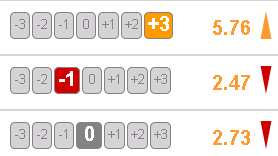
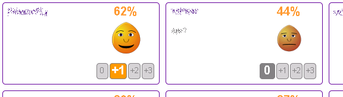
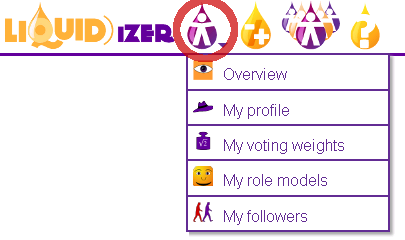

What is the Liquidizer
The Liquidizer is an interactive voting game. It is used to find collective answers to a number of conflicting questions or demands. It differs from similar projects like Doodle or LimeSurvey. The Liquidizer can handle a much larger amount of conflicting questions, because finding the optimal answer is made a collaborative experice. Rich visualizations of conflicting positions, trends, and matches allow for an indepth reflection of a groups own preferences.
Quick overview
The Liquidizer system is designed to make group decisions as easy and as effective as possible. A public instance can be accessed here.
Simple voting system
Preferences for each question can be cast between -3 and 3. A limited voting weight will be distributed on the selected issues according to the preferences. Updated results will show up immediately after clicking and can be revised at any time later.

Social interaction
The political match between all candidates is visualized with emoticons. Conflicting positions can be detected quickly and possibly discussed through discussion.

Full control over your data

More documentation
You can find more documentation on the help page of the Liquidizer.

Installation
On Ubuntu you can install the Liquidizer by the following commands:sudo apt-get install git-core maven2 gnuplot graphvizgit clone git://github.com/liquidizer/liquidizer.gitcd liquidizermvn jetty:run